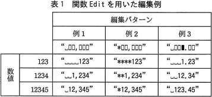
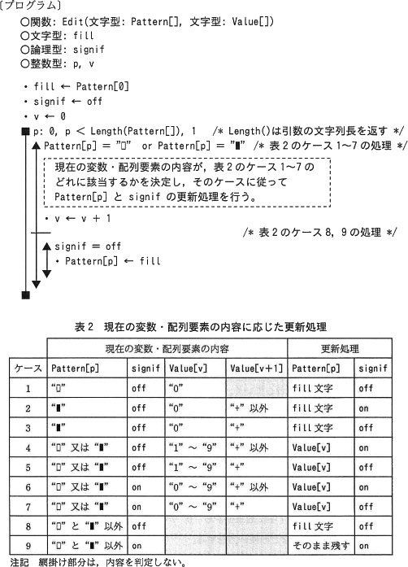

基本情報技術者過去問題 平成28年秋期 午後問8
次のプログラムの説明及びプログラムを読んで、設問1~3に答えよ。
事務計算においては，数値を見やすく表示(印字)するために，例えば3桁ごとに区切りの","を挿入する
などの編集処理がよく行われる。
関数 Edit は，指定された編集パターンに従って，数値を編集するプログラムである。
表1に，関数 Edit を用いた編集例を示す。例1では，3桁ごとに区切りの","を挿入している。
例2では，例1の編集に加え，上位の空いた桁を"＊"で埋めている。
例3では，数値の右端から2桁目と3桁目の間に"."を挿入している。

ここで，編集パターン中の文字"▯"及び"▮"は，数字と対応付けされた制御文字を表している。また，"␣"は空白文字を表している。
〔プログラムの説明〕
関数 Edit は，次の形式で呼び出され，二つの引数をもつ。
関数：Edit(文字型: Pattern[]，文字型:Value[])
Pattern[] には，編集パターンの文字列が格納されている。Value[] には，編集する数値を表す文字列が格納されている。各配列の添字は，0から始まる。文字列 Pattern[] のi番目の文字は Pattern[i－1] と表記する。文字列 Value[] についても同様である。
Pattern[] は，1文字以上から成る文字列であって，表示可能な図形文字及び制御文字("▯"及び"▮")から構成される。
Value[] は，数値を表す文字列であって，数字"0"～"9"の並びの後に，数値が正又は0なら"＋"を，負なら"－"を付加した形式である。数字の個数は，Pattern[] 中の文字"▯"及び"▮"の個数と一致するように，必要であれば前方に"0"を付加する。例えば，Pattern[] の内容が"＊▯▯,▯▮▯"のとき，Value[] には，数値が123なら"00123+"，0なら"00000+"，－123なら"00123-"を指定する。
関数 Edit は，Value[] で与えられた数値を Pattern[] に従って編集し，編集結果で Pattern[] を置き換える。
〔編集方法〕
Pattern[] 中の各文字について，先頭から順に1文字ずつ，次の①～③のいずれか一つの操作を実行していく。
関数 Edit が呼び出されたときの Pattern[] 中の先頭の文字(以下，fill文字という)で置き換える。
Value[] 中の対応する桁の数字で置き換える。
置き換えないで，そのまま残す。
論理型変数 signif は，on 又は off の値を取る。この変数の実行開始時の値は off であり，Value[] 中に最上位から"0"が連続した後に"0"でない数字が見つかると on になる，などの使い方をする。
関数 Edit が呼び出されるとき，各引数には正しい値が設定されているものとする。
